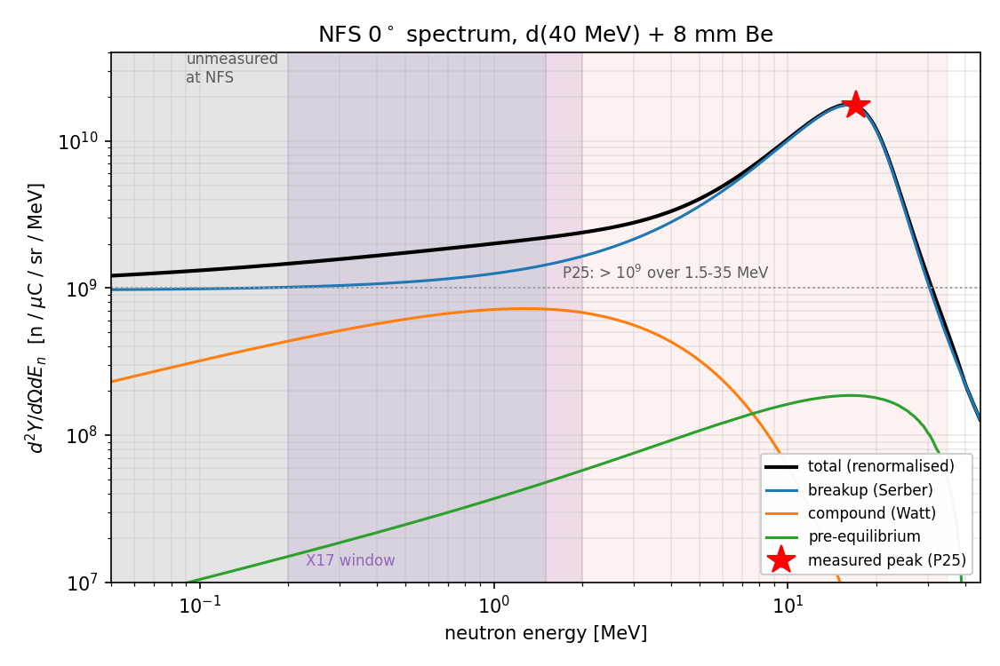

GANIL / NFS, Caen: X17 with fast neutrons
SPIRAL-2 · Neutrons For Science · pulsed d+Be and quasi-monoenergetic neutrons, 1–40 MeV · September 2026
At n_TOF the opening-angle resolution is frozen by the 500 bar capsule: 1.26 % X₀ before the Micromegas, mostly 0.6 mm Al and 0.9 mm CFRP. The question here was whether a larger, lower-pressure cell on a fast-neutron beam could trade some rate for a much thinner wall — and whether NFS has the neutrons the physics wants.
Status: paused at the gate. The X17 shoulder needs E_n ≲ 2 MeV (θ_min falls from 110° at rest to 99° at 2 MeV and 66° at 14 MeV, into the IPC-rich region). The NFS d+Be spectrum peaks at 17 MeV and is measured only down to 1.5 MeV; below that only an unvalidated model exists. In the 0.2–2 MeV window the flux is ~10⁵ n/cm²/s at 13.6 m and 50 µA — about 15× below the first estimate. The first thing to ask GANIL is whether a low-energy D(d,n) or near-threshold ⁷Li(p,n) source can run there.
The cell
- Best design so far40 cm, 30 bar, R = 5 cm, Be barrier: 0.21 % X₀ against n_TOF's 1.23 %, at 0.6× the areal density
- The floorbelow ~30 bar the wall hits its manufacturing minimum; lower pressure buys no resolution, only lost rate
- Real leversthe barrier material and the Micromegas window, not the pressure
- Concepta 1 bar mylar-wrap cell on a carbon-rod cage (later carried to the ILL as cell G1)
The beam

- MachineSPIRAL-2 LINAC, 88 MHz, ≤ 50 µA at NFS, 1-in-N bunch selector (N ≥ 100)
- Hall28 m TOF hall, flight paths 5–30 m
- 0.2–2 MeV flux~10⁵ n/cm²/s at 13.6 m (8 cm spot), 50 µA — model, not measured
- Alternativeslower deuteron energy; D(d,n)³He monoenergetic; ⁷Li(p,n) near threshold; moderation (too soft)
Source: x17_facility_search/docs/PLAN_GANIL_NFS.md and
ganil_nfs/README.md (every number with its reference), vessel_design/.